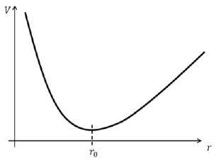
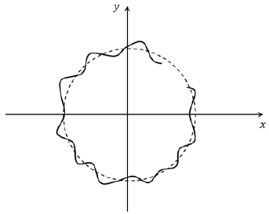

Y20 (2020) — English translation
Let's write Newton's second law in projection onto a line passing through the electrons. Since the distance does not change, the acceleration is $\frac{v^2}{r}$. We end up with the equation: $$ \frac{2mv^2}{d}=vBe-\frac{e^2}{4\pi\varepsilon_0 d^2} $$
We solve the quadratic equation for $v$. The discriminant of this equation is $(Be)^2-\frac{2me^2}{\pi\varepsilon_0d^3}$.
From the discriminant it is clear that solutions for speed exist only for $d\geqslant2\sqrt[3]{\frac{m}{4\pi\varepsilon_0 B^2}}$. This will be the minimum possible distance.
Since the discriminant is zero: $$v_m = -\frac{b}{2a}= \frac{Be}{2m}d_{\text{min}}=\frac{e}{2}\sqrt[3]{\frac{B}{4\pi\varepsilon_0m^2}}$$
The center of mass moves under the influence of two Lorentz forces: $$m\vec{a} = \left[\vec{v}_1\times \vec B\right]q+\left[\vec{v}_2\times \vec B\right]q = \left[\left(\vec{v}_1+\vec{v}_2\right)\times \vec B\right]q = 2\left[\vec{v}_{CM}\times \vec B\right]q$$
Since there are no other external forces, the speed of the center of mass rotates, but does not change in magnitude. The acceleration of the center of mass in this case is equal to $\vec\omega\times\vec v$ $$2m\left[\vec\omega_{CM}\times\vec v\right] \equiv 2\left[\vec{v}_{CM}\times \vec B\right]q$$ $$\omega_{CM} = \frac{Be}{m}$$
During the movement described in the condition, kinetic energy is conserved. Thus, the angular velocity relative to the center of mass does not change. $$\omega = \frac{v_0}{d_1}$$
The speed of the center of mass and the relative speed are equal, so the speeds of the electrons will become equal when the angle between the speed of the center of mass and the relative speed becomes equal to $\frac{\pi}{2}$. $$t = \frac{\pi}{2}\frac{1}{\left|\frac{v_0}{d_1} - \frac{eB}{m}\right|}$$
$K=\frac{m}{2}(\omega^2r^2+v_r^2)$
The angular momentum changes due to the Lorentz force component corresponding to the radial velocity component. $$\frac{dL}{dt} = v_rBer$$
Integrating the expression for $\frac{dL}{dt}$ we obtain the integral of motion $$J = L-\frac{eBr^2}{2}$$
We express the angular velocity through $J$, then substitute it into the expression for kinetic energy. $\omega = \frac{1}{m}\left(\frac{J}{r^2}+\frac{eB}{2}\right)$.
To the kinetic energy we must add the energy of the Coulomb interaction per electron. $$E = \frac{mv_r^2}{2}+\frac{r^2}{2m}\left(\frac{J}{r^2}+\frac{eB}{2}\right)^2+\frac{e^2}{16\pi\varepsilon_0r}$$
The limits of $U(r)$ at points $0$ and $+\infty$ are equal to $+\infty$, and the function is continuous on the segment $(0, +\infty)$
The second derivative of the function $U(r)$ has the following form: $$\frac{Ar^4+Br+C}{r^4}; ~~A,~B,~C, ~r > 0$$ On the segment of interest to us, it is always greater than zero, both limits are infinite, therefore there is a minimum, and the only one.

Since we will remain in the vicinity of the minimum, the electrons will perform harmonic oscillations along the radius.
